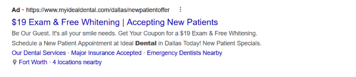
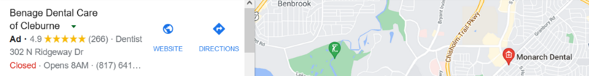

Traffic Boosting Reccomendations
Inbound Links
Boosting Traffic
Social Media
-
Social media has quickly become the most widely used and accepted marketing platform globally. Keeping active social media accounts will not only increase customer engagement and relationships, but it can also drive major traffic to your website and physical business. Here are some ways that you can effectively use social media to increase your online following:
-
Frequently interact with followers by replying to comments, sharing their content, and quickly responding to direct messages (Lobell, 2020).
-
Include a call-to-action as well as a link to your website on relevant posts.
-
Adopt multiple social media platforms to reach a wider audience. Because Facebook and Instagram are two of the largest platforms globally, we would recommend strengthening your follower base here and then expanding based on your target audience.
-
Establish yourself as a thought leader by posting industry-relevant content, such as dental tips and news.
-
Use relevant and popular hashtags.
Paid Advertising
-
While paid advertising does require some additional budgeting, it is an effective way to reach a wider, targeted audience and achieve fast, measurable results. Because the world of online advertising is constantly expanding and evolving, we’ve included our top strategy recommendations for Smile Ninja:
-
Social Media Advertising
-
Social media easily provides one of the most convenient and well-targeted forms of online advertising. Because platforms provide psychographic and demographic user data, you can be sure that your ads are showing up specifically for your target audience. Social media ads also allow for flexible budgeting and on-site analytics.
-
Search Ads
-
With search ads, you pay to have your website “show up at the top of search results for particular keywords,” as you can see below (McCormick, 2021). Search ads have proven to be one of the most effective forms of Google Advertising and have the benefit of being pay-per-click. However, search ads can often be more costly as results are displayed in order of highest bids as well as quality and relevance of your website.

-
Google Maps Advertising
-
For businesses where visiting a physical location is a necessity (like a dentist or a salon), Google Maps provides an outstanding platform to advertise and differentiate your business. Much like search ads, Google Maps ads will appear at the top of listings when users are searching for related content. This is a great way to gain exposure and get a lead over competitors.

-
Retargeting
-
Retargeting ads are targeted towards users who have already visited your website at least once, and “are therefore more likely to return” (McCormkick, 2021). Retargeting ads can appear on websites, social media feeds, or even in email and direct marketing, and have proven to be effective in increasing sales.